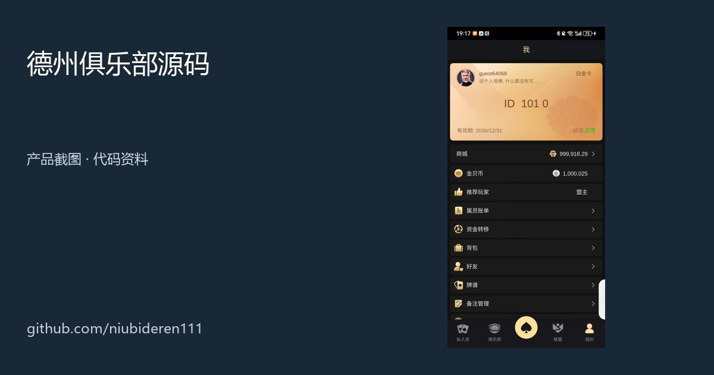

Texas Hold'em Poker Club Source Code
德州扑克俱乐部源码
面向德州扑克俱乐部、私人局和多人牌桌场景的图文产品与源码资料。查看 Unity/Lua 客户端、C++/Tars 服务端片段、俱乐部牌桌 API、构建脚本与热更新文档。
简体中文项目亮点、主要功能、玩法入口、技术组成与产品截图
繁體中文專案亮點、主要功能、玩法入口、技術組成與產品截圖
EnglishHighlights, features, game entries, architecture and screenshots
